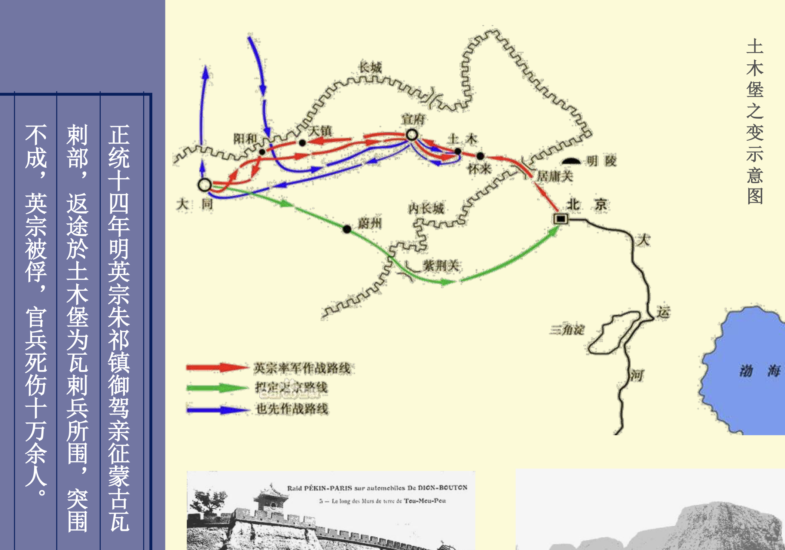

秦朝两种道路
- 驰道：相当于是国道，以咸阳为中心的全国性交通干道网。
- 直道：相当于是军用高速公路，连接帝国北部边疆与首都的军事专用通道。
北京与周围地区的交通道路
沿太行山前山麓的南北大道
- 北京→保定→石家庄→邢台→邯郸→安阳
- 发源于山西高原的河流穿过太行山，在太行山东麓形成众多冲积扇， 冲积扇连结成群构成著名的冲积扇群，成为城市与农业生产的重要地带，城 市与城市的连接之处就是古代交通道路。
- 可以在高德地图上验证一下，这条城市线确实是沿着太行山东麓的冲积扇群分布的。
|
|
- 太行八陉均呈东西走向，与太行山东麓南北向道路相互连接，连接 山西高原与华北平原，共同组成交通网络。陉是山谷中的狭窄通道，古代交通道路必经之地，历来是兵家必争之地。
- 安史之乱和西柏坡会议都和这些道路有关。
华北通向内蒙的道路
- 主要是内三关：居庸关、紫荆关、倒马关。

华北通向东北的道路
- 古北口（北京密云县）、喜峰口（河北迁西县）、山海关（秦皇岛市）。
- 辽西走廊为辽西低山丘陵东南的沿海狭长地带，长180公里， 宽20～30公里，为东北—西南走向的海蚀冲积平原。走廊地带背山面海，形势险要，是天然交通要道。南起山海关，北至锦州。但实际上这条道路开始使用的时间很晚，为什么呢？第四纪以来辽西走廊经历数次海侵、海退，最后一次海侵导致这条道路长期布满沼泽、水泡，难以通行，直至13世纪初道路正式通行。
- 这也是为什么后来林彪要先打锦州，打完锦州控制了辽西走廊就可以关门打狗（沈阳和长春）。